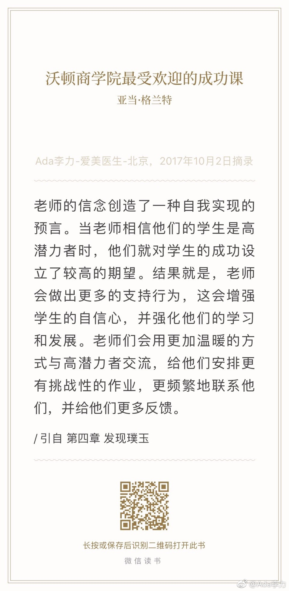

健身不容易坚持的最大障碍是出差，九月出差及参会加起来就有12天，几乎都在周末。健身无外乎是力量训练和有氧。力量训练只能利用早起后的时间，可是一旦晚睡，早起就保证不了。有氧运动还是选择快走。每日万步的计划只要上下班都步行就能达到。障碍是如果有正式的商务会谈，运动鞋很难搭配衣服。说到底，还是时间不够，比健身优先级更高的事情是睡觉。
//@Francesco_yu：其实还好，比如一个月要有20天的健身任务，在没有差的日子抓紧时间做，就跟公司一般都是上半年追业绩追的比较紧，超过了后半年就轻松很多。出差住酒店就晚上弄了，早起确实不现实，至少在中国有这样的夜生活的前提下@Ada李力:健身不容易坚持的最大障碍是出差，九月出差及参会加起来就有12天，几乎都在周末。健身无外乎是力量训练和有氧。力量训练只能利用早起后的时间，可是一旦晚睡，早起就保证不了。有氧运动还是选择快走。每日万步的计划只要上下班都步行就能达到。障碍是如果有正式的商务会谈，运动鞋很难搭配衣服。说到底，还是时间不够，比健身优先级更高的事情是睡觉。
罗森塔尔实验说明了“期望”对学生的影响力。用在家长教育孩子上，说明家长对孩子有期望有信心，会极大提升孩子成才的概率。用在公司运营中，对员工描绘远景以及看好员工的潜力，相信的员工，和公司一起发展成长的概率就大。。 
//@加兴曰:许多人想不明白为什么别人能够轻轻松松获利，认为这是不公平。凡有收获必有付出，处境相似，机会相同却处处一无所获的人，第一是不明白取舍的道理，总想拿别人的钱办自己的事，最多就是一锤子买卖；第二是没有对等交换的本钱，十块钱怎么努力也买不到一碗牛肉面的，正确的方式是，买五斤米。@Ada李力:付出越多，得到越多的现象，屡见不鲜。但大部分人不认同这是个规律，人性自私的概念深入骨髓。
#读书# 实际是一本心理学著作，书名应该翻译成《付出和获取》我们通常认为那些成功者大部分是获取者，但这本书告诉我们，最杰出的成功者大部分是付出者，诡异的是组织中表现最差的也是付出者。读这本书时也不断印证了从其它地方获得的观念，比如这么几个：1，人际互动的最佳策略是：以善为始，以牙还牙2，付出者避免成为别人的垫脚石的做法是：学会识别那些获取者，并且不要花太多精力在这些获取者身上3，最杰出的人是付出者的逻辑容易理解：他首先有能力帮助别人，帮助进入正反馈，进尔形成大事业。
 我们也差点卷入阿里“智能测肤”风波
我们也差点卷入阿里“智能测肤”风波